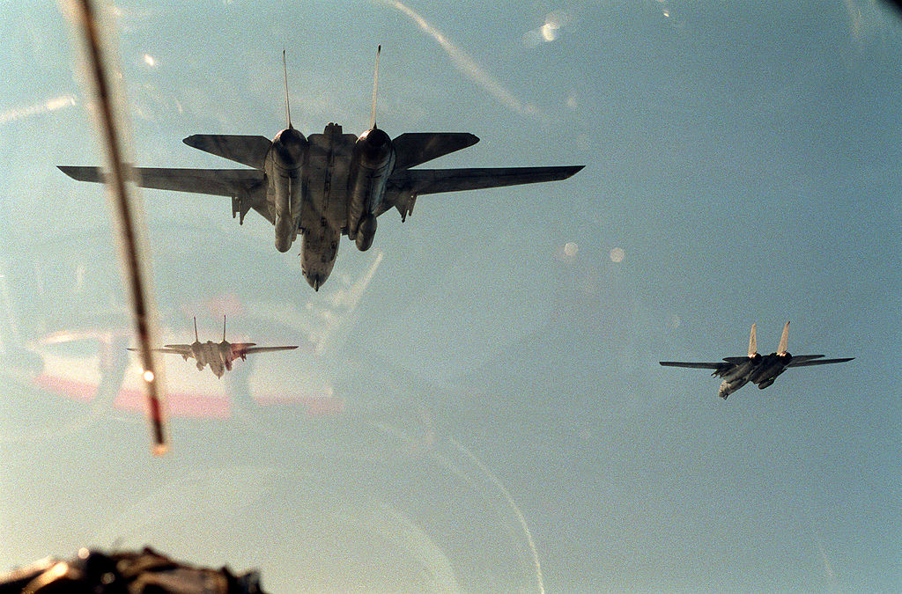
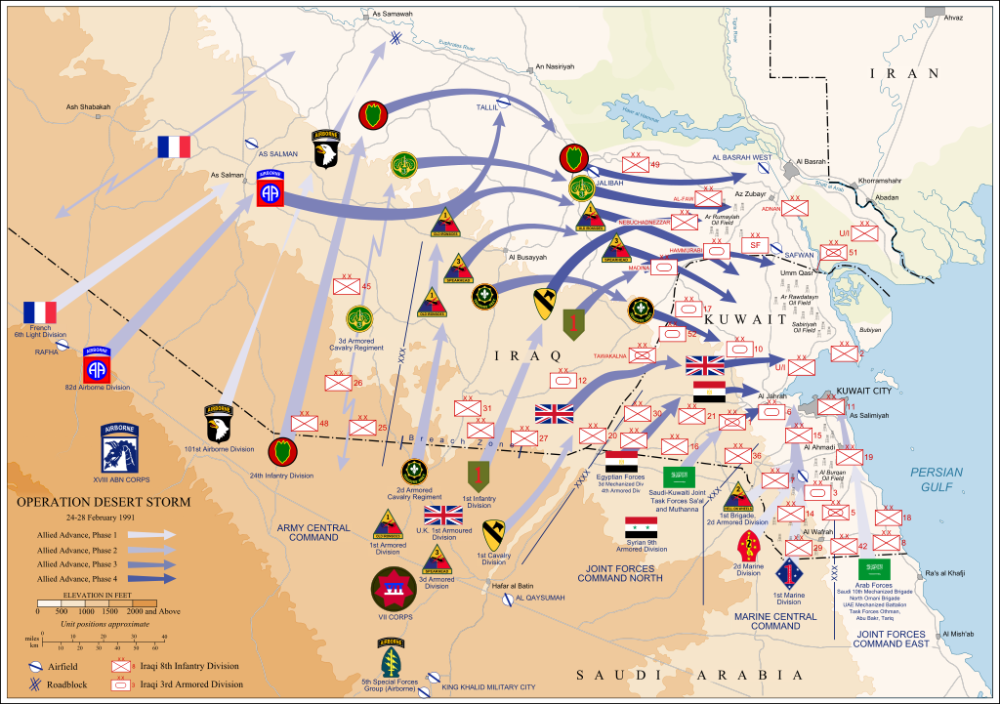

Предыстория
После окончания войны с Ираном в 1988 году, президент Ирака Саддам Хусейн столкнулся с серьёзными экономическими проблемами — он должен был срочно выплатить Саудовской Аравии и Кувейту долги, накопленные за время войны. С этой проблемой Саддам решил справиться радикальным путём: Хусейн обвинил Кувейт в том, что тот производит больше нефти, чем указано в договоренностях, а также в том, что ворует топливо из иракских скважин. Багдад потребовал от Кувейта компенсации «потерь» в 2 400 000 000 долларов за якобы незаконную добычу нефти в приграничном месторождении, списания задолженности по займам, полученным во время ирано-иракской войны (17 000 000 000 долларов), уступки или сдачи в аренду Ираку стратегически важных островов Варба и Бубиян. Кувейт ответил отказом. 2 августа 1990 года иракские войска вторглись в Кувейт. В последующие месяцы в рамках операции «Щит пустыни» в зону Персидского залива для защиты Саудовской Аравии и стран Залива от возможного продолжения иракской агрессии были переброшены многонациональные силы. 29 ноября 1990 года Совет Безопасности ООН принял резолюцию, позволяющую применить к Ираку все доступные меры воздействия, в соответствии с Уставом ООН.
План операции
Сразу же после вторжения иракских войск в Кувейт американским Объединённым комитетом начальников штабов и Штабом командующего Объединённого центрального командования Вооружённых сил США был разработан план операции по освобождению Кувейта и разгрому иракских вооружённых сил. В основе плана лежала разработанная в 1980-х годах концепция «воздушно-наземной операции». Операцию, получившую кодовое наименование «Буря в пустыне», предусматривалось провести в два этапа.
На первом этапе в ходе воздушной наступательной операции планировалось нанести массированные удары по ключевым объектам и войскам на территории Ирака и Кувейта, подавить систему ПВО, завоевать господство в воздухе, дезорганизовать систему государственного и военного управления, нанести максимально возможный ущерб южной группировке иракских войск.
На втором этапе в ходе воздушно-наземной операции предполагалось обходящими силами сухопутных войск и морской пехоты при одновременной высадке в тыл многочисленных оперативных и тактических десантов окружить и уничтожить по частям группировку иракских вооружённых сил в Кувейте и на юге Ирака.
Разработанный план не устанавливал каких-либо временных ограничений для основных этапов боевых действий, а общий успех операции ставился в прямую зависимость от результатов первого массированного ракетно-авиационного удара.
Ход событий
Подготовка операции многонациональных сил
Командованию многонациональных сил удалось создать мощную авиационную группировку, насчитывающую свыше 2000 самолётов, и запасы материальных средств, обеспечивающие потребности авиации в течение 2—3 месяцев боевых действий. Авиационная группировка включала 20 стратегических бомбардировщиков B-52, более 1700 самолётов тактической и до 450 боевых машин палубной авиации. Соединения и части национальных ВВС, передислоцированные в зону конфликта, были сведены в единую авиационную группировку и подчинены командованию 9-й воздушной армии ВВС США. На базе штаба 9-й воздушной армии было создано единое центральное авиационное командование — «Синсентком» (командующий — генерал-лейтенант Чак Хорнер (Chuck Horner).
Наземные силы МНС насчитывали 16 дивизий (до 800 тысяч человек), более 4000 танков, свыше 3700 орудий и миномётов. Армейская авиация имела около 2000 боевых вертолётов.[1]
Военно-морской флот МНС имел до 170 кораблей.[1]
Им противостояла в Кувейте и на юге Ирака группировка войск в составе более 40 дивизий (около 500.000 человек), до 4000 танков, свыше 5 тысяч орудий и минометов, 711 самолётов, 489 вертолетов. Соотношение по новейшим образцам вооружения составляло: по боевым самолётам — 13:1, боевым вертолетам — 16:1, танкам — 4,3:1 в пользу МНС. Антииракские силы имели абсолютное превосходство на море.[1]
В качестве одного из возможных способов отвлечения значительных сил Ирака командованием многонациональных сил использовалась демонстрация подготовки к высадке обширного морского десанта. В целом замысел по дезинформации с помощью активных действий подразделений морской пехоты удался. Убеждению иракцев в решительности и реальности намерений командования многонациональных сил высадить морской десант способствовали действия всех корабельных группировок, находившихся в Персидском заливе.
За три месяца до начала войны многонациональные силы начали регулярно проводить совместные учения сухопутных войск и тренировки штабов. В ходе приготовлений пришлось решать такие специфические проблемы, как обеспечение войсковой группировки водой и подготовка к возможному применению противником оружия массового поражения.
Главные сухопутные силы союзников сосредоточились в северо-восточной части Саудовской Аравии. Непосредственно вдоль границ с Кувейтом, Ираком и нейтральной зоной на фронте до 350—400 км были развёрнуты передовые части и подразделения вооружённых сил Саудовской Аравии, а также войска прикрытия из состава американских корпусов и дивизий. В районах, находящихся на удалении от 25 до 50 км от границы, были сосредоточены главные силы, прикрывавшие важные в оперативном отношении дороги, морские порты и нефтедобывающие районы.
Иракская оборона
Для ведения боевых действий на территории Кувейта и в южной части Ирака иракское командование создало южную группировку войск. Наиболее боеспособные соединения этой группировки сосредотачивались по рубежу реки Евфрат..
Воздушное наступление

С 17 по 19 января 1991 года авиацией многонациональных сил США был нанесён ряд массированных авиационных ударов (преимущественно в тёмное время суток) по всей территории Ирака. Около месяца по ночам вёлся огонь с воздуха. В ходе операции было выполнено около 4700 боевых вылетов (свыше 80 — стратегической авиацией, более 4000 — тактической авиацией и около 600 — палубной авиацией). В результате операции было завоёвано и уверенно удерживалось господство в воздухе, уничтожено множество объектов военного и гражданского производства.
В то же время система управления вооружёнными силами Ирака продолжала функционировать, иракская авиация понесла лишь незначительные потери, действовало большое количество мобильных пусковых установок оперативно-тактических ракет. В частности, были произведены пуски ракет «Скад» (по иракской терминологии «Эль-Хуссейн» и «Эль-Аббас») по территории Израиля и Саудовской Аравии. Это вынудило американское командование срочно разместить батареи ПВО MIM-104 Patriot в Израиле[2].
Практически не было создано условий для успешного проведения воздушно-наземной операции по освобождению Кувейта.
В сложившейся обстановке командование многонациональных сил решило произвести доразведку целей и уточнить последующие действия коалиционных сил; воздействие на противника при этом не прерывалось, лишь несколько снизилась его интенсивность.
В период с 20 января по 23 февраля многонациональные силы осуществляли порядка 700—800 самолёто-вылетов в сутки. Основными объектами ударов являлись войска первого и второго эшелонов, коммуникации, пусковые установки оперативно-тактических ракет с авианосцев в Персидском заливе, позиции артиллерии, резервы, склады боеприпасов и материально-технических средств, военные и военно-промышленные объекты, пункты управления систем государственного и военного управления. Период войны на суше продлился 4 дня. 28 февраля 1991 года Президент США Джордж Буш - старший отдал приказ о завершении операции.
Наземная операция

На основе анализа группировки иракских войск командованием многонациональных сил было принято решение о создании внешнего и внутреннего фронтов окружения. Американский 7-й армейский корпус (вместе с 1-й бронетанковой дивизией Великобритании) получил приказ наступать в направлении Хафар-эль-Батин, Басра, разгромить иракские войска в районе Эз-Зубейр и замкнуть фронт окружения войск 3-го армейского корпуса Ирака в Кувейте; это направление действий рассматривалось в качестве главного и именовалось «центральным».
18-му воздушно-десантному корпусу США (вместе с 6-й бронекавалерийской дивизией Франции) ставилась задача наступать на Эш-Шуба, Эль-Бусайя, Эн-Насирия, во взаимодействии с 7-м корпусом преодолеть оборону иракских войск, уничтожить корпусные резервы противника в районах Джада, Эль-Бусайя, и перерезав шоссе Басра-Багдад в районе Эн-Насирия завершить создание внешнего фронта окружения южной группировки иракских войск.
Формирования египетских, кувейтских и саудовских сухопутных войск были сведены в оперативно-тактические группы «Север» и «Восток»; им предстояло наступать на вспомогательных направлениях и во взаимодействии с 7-м корпусом и морской пехотой США принять участие в уничтожении иракских войск, оборонявшихся непосредственно на территории Кувейта.
Для прикрытия левого фланга главной группировки на базе 6-й бронекавалерийской дивизии была создана оперативно-тактическая группа, в состав которой вошли бригада 82-й воздушно-десантной дивизии и подразделения саудовских войск. За двое суток до начала военных действий эта группа была скрытно переброшена в район Рафха и развернулась вдоль саудовско-иракской границы. Её задача заключалась в стремительном наступлении в направлении Эс-Сальман, Самава и выходе на рубеж реки Евфрат.
Из-за того, что ударами авиации многонациональных сил были уничтожены все мосты через Евфрат, к 20 февраля иракские войска, расположенные южнее Евфрата, оказались отрезанными от центра страны. К этому времени иракская сторона потеряла около 30 тысяч человек убитыми, ранеными и пропавшими без вести; более полутора тысяч иракских военнослужащих сдались в плен.
С 20:00 23 февраля в полосе действий ударных группировок началось массированное подавление средствами радиоэлектронной борьбы системы управления вооружённых сил Ирака. В 4:30 24 февраля началась воздушно-наземная операция. Непосредственному переходу войск в наступление предшествовала мощная комплексная огневая подготовка продолжительностью более часа с применением полевой артиллерии, тактической, палубной и армейской авиации.
Через четыре часа после начала наступления на приморском направлении в пригород Эль-Кувейта был выброшен тактический воздушный десант. В дальнейшем на нескольких участках побережья южнее Эль-Кувейта была осуществлена высадка морского десанта. Тем временем на центральном и западном направлениях главные силы 7-го армейского и 18-го воздушно-десантного корпусов беспрепятственно преодолели зону инженерных заграждений перед передним краем и продвинулись вглубь территории Ирака на 25—30 км.
В сложившейся обстановке иракское командование предприняло попытку выдвинуть из глубины соединения второго оперативного эшелона, но они понесли большие потери от массированных ударов авиации многонациональных сил.
С утра 25 февраля войска антииракской коалиции продолжили активные боевые действия, наращивая темпы наступления. На приморском направлении коалиционным войскам удалось выйти к южной и западной окраинам Эль-Кувейта, где они впервые наткнулись на упорное сопротивление. К середине суток соединения иракских войск, занимавшие оборону в районе Эль-Кувейта и в юго-восточной части Кувейта, оказались отрезанными от главных сил. Началась массовая сдача иракских военнослужащих в плен.
На центральном направлении главная группировка многонациональных сил вышла ко второму оборонительному рубежу иракских войск, вклинившись в оборону иракцев на 50 км. На западном направлении части 24-й пехотной дивизии США овладели Эль-Бусайя. Иракские соединения, понеся значительные потери, начали массовый отход по всему фронту. Попытки иракского командования подготовить и провести контрудар по главным силам 7-го армейского корпуса США были сорваны союзной авиацией.
К концу 26 февраля многонациональные силы вытеснили иракские войска из кувейтской столицы. Попытка деблокирования окружённой под Эль-Кувейтом группировки была отражена 4-й бронетанковой дивизией Египта во взаимодействии с двумя сирийскими и одной кувейтской бригадами. На центральном направлении основная ударная группировка многонациональных сил в основном завершила расчленение группировки иракских войск, воспрепятствовав их выходу с территории Кувейта в центральные районы Ирака.
На западном направлении соединения и части 18-го воздушно-десантного корпуса США окружили и уничтожили 4-ю и 46-ю дивизии 7-го армейского корпуса Ирака. В ночь на 27 февраля 3-я бронетанковая дивизия перерезала стратегическое шоссе Басра — Багдад.
27 февраля центральная группировка многонациональных сил продолжала наступление на Басру, западная вышла в район Эн-Насирии. В 8:00 28 февраля иракские войска прекратили сопротивление по всему фронту, о чём было сообщено по багдадскому радио.